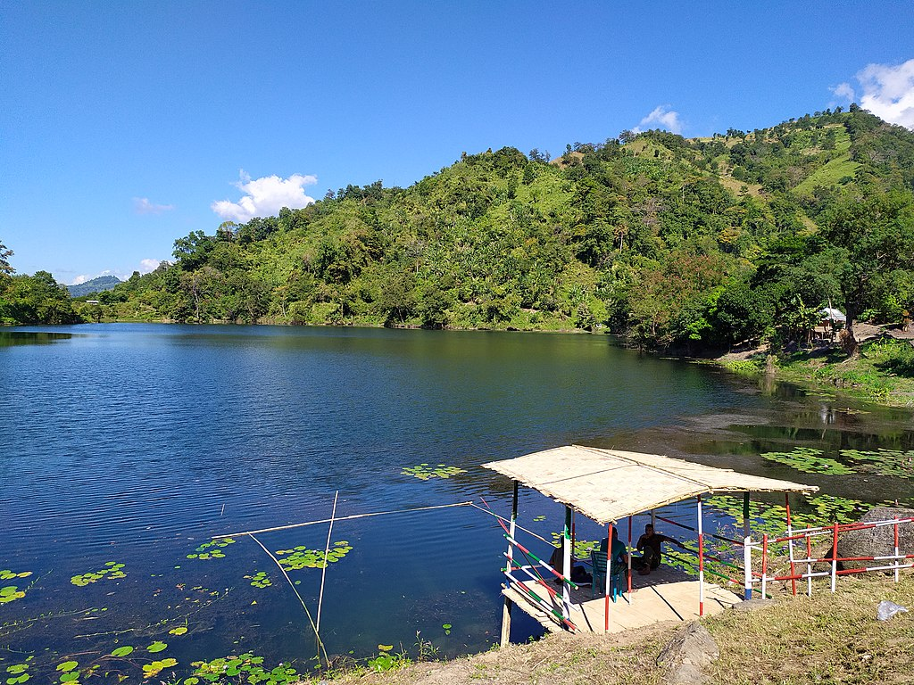
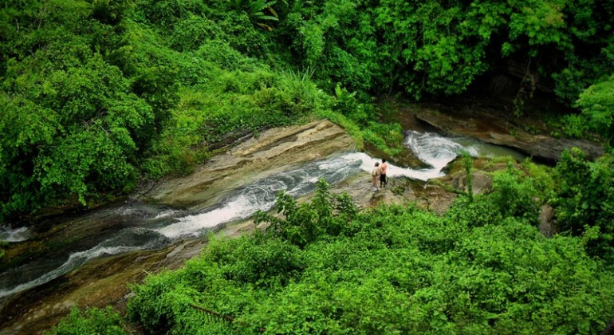

বান্দরবান
বান্দরবান বাংলাদেশের দক্ষিণাঞ্চলের পার্বত্য চট্টগ্রামের একটি শহর। বাংলাদেশের তিনটি পার্বত্য জেলার মধ্যে একটি হলো বান্দরবান। বান্দরবানের দক্ষিণ-পশ্চিমে কক্সবাজার, উত্তর-পশ্চিমে চট্রগ্রাম জেলা, উত্তরে রাঙামাটি ও পুর্বে মায়ানমার। ভৌগলিক কারণেই বান্দরবানে অনেক দর্শনীয় স্থান রয়েছে। চট্টগ্রাম বিভাগীয় শহর থেকে ৭৫ কিলোমিটার দক্ষিণ পূর্বে অবস্থিত এ শহরটি একই নামের জেলা ও উপজেলার (বান্দরবান জেলা ও বান্দরবান সদর উপজেলা) প্রশাসনিক সদরদপ্তর। এটি বান্দরবান জেলার সবচেয়ে জনবহুল স্থান। এর আয়তন ১৩.০৫ বর্গকিলোমিটার এবং জনসংখ্যা ৪১,৪৩৪ জন।
অবস্থান ও সীমানা
বাংলাদেশের দক্ষিণ-পূর্বাংশে ২১°১১´ থেকে ২২°২২´ উত্তর অক্ষাংশ এবং ৯২°০৪´ থেকে ৯২°৪১´ পূর্ব দ্রাঘিমাংশ জুড়ে বান্দরবান জেলার অবস্থান।[১] রাজধানী ঢাকা থেকে এ জেলার দূরত্ব প্রায় ৩২৫ কিলোমিটার এবং চট্টগ্রাম বিভাগীয় সদর থেকে প্রায় ৭৫ কিলোমিটার। এ জেলার পশ্চিমে কক্সবাজার জেলা ও চট্টগ্রাম জেলা, উত্তরে রাঙ্গামাটি জেলা, পূর্বে রাঙ্গামাটি জেলা ও মিয়ানমারের চিন রাজ্য এবং দক্ষিণে ও পশ্চিমে মিয়ানমারের রাখাইন রাজ্য অবস্থিত
বগালেক
বান্দরবানে যে কয়েকটি দর্শনীয় স্থান আছে বগালেক(Bagakain Lake/ Boga Lake) তার মধ্যে অন্যতম। প্রকৃতি তার আপন খেয়ালে এখানে পাহাড়ের উপর জলরাশি সঞ্চার করে তৈরি করেছে এই হ্রদ। সমুদ্র সমতল হতে প্রায় ১৭০০ ফিট উপরে পাহাড় চূড়ায় ১৫ একর জায়গা জুড়ে বিস্তৃত এই অত্যাশ্চর্য হ্রদটি। বিষয়টি যতটা না অবিশ্বাস্য, যতটা না অলৈাকিক তার চাইতেও বেশী এর সৌন্দর্য। শান্তজলের হ্রদ আকাশের কাছ থেকে একমুঠো নীল নিয়ে নিজেও ধারন করে নিয়েছে সেই বর্ণীল রং। পাহাড়ের চূড়ায় নীল জলের আস্তর নীল আকাশের সাথে মিশে তৈরি করেছে এক প্রাকৃতিক কোলাজ। মুগ্ধ নয়তে দেখতে হয় আকাশ পাহাড় আর জলের মিতালী। প্রকৃতি এখানে ঢেলে দিয়েছে একরাশ সবুজের ছোঁয়া। যেন তুলির আঁচড়ে বগালেকের পুরো জায়গা সেজেছে ক্যানভাসের রঙে আর প্রকৃতি তার আপন খেয়ালে এঁকেছে জলছবি

নাফাখুম
নাফাখুম জলপ্রপাত (Nafakhum Waterfall) বান্দরবান জেলার থানচি উপজেলার রেমাক্রি ইউনিয়নে অবস্থিত। পানি প্রবাহের পরিমানের দিক থেকে এটিকে বাংলাদেশের অন্যতম বড় জলপ্রপাত হিসাবে আখ্যায়িত করা হয়। আবার কেউ কেউ একে বাংলার নায়াগ্রা বলে অভিহিত করেন। নাফাখুম দেখতে থানচি বাজার থেকে সাঙ্গু নদী পথে নৌকা দিয়ে রেমাক্রি যেতে হয়।বান্দরবান জেলার থানচি উপজেলার রেমাক্রি ইউনিয়নে এই জলপ্রপাতটি অবস্থিত। বান্দরবান জেলার থানচি উপজেলার রেমাক্রি একটি মারমা অধু্যসিত এলাকা। বান্দরবান হতে ৭৯ কি.মি. দুরে অবস্থিত থানচি। সাঙ্গু নদীর পাড়ে অবস্থিত থানচি বাজার।

চিম্বুক
চিম্বুক পাহাড় বা চিম্বুক হিল বা কালা পাহাড় বাংলাদেশের চট্টগ্রামের বান্দরবান জেলায় অবস্থিত দেশের তৃতীয় বৃহত্তম পাহাড় এবং ঐতিহাসিক স্থান। এটি গড় সমুদ্র পৃষ্ট হতে প্রায় ২৫০০ ফুট উঁচু। এটি বাংলাদেশের পাহাড়ী সৌন্দর্যের রানী এবং বাংলার দার্জিলিং নামেও বহুল পরিচিত। চিম্বুক পাহাড় চট্টগ্রাম থেকে ৯২ কিলোমিটার এবং বান্দরবান জেলা শহর থেকে ২৬ কিলোমিটার দূরে অবস্থিত। এটি থানছি সড়কের দূর্গম পাহাড়ী এলাকায় অবস্থিত।চিম্বুক পাহাড় বাংলাদেশের তৃতীয় বৃহত্তম পাহাড় এবং ঐতিহাসিক স্থান। এই পাহাড়ের চূড়া হতে পার্শ্ববর্তী জেলা কক্সবাজার ও চট্টগ্রামের উপজেলাগুলো দেখা যায়। বর্ষাকালে এই পাহাড়ের চূড়া হতে সাজেকের মতো মেঘের উড়াউড়ি দেখা যায় এবং পাহাড়ের নিচ দিয়ে মেঘ ভেসে যাওয়ার দৃশ্য অবলোকন করা যায়। চিম্বুক পাহাড় থেকে সূর্যোদয় এবং সূর্যাস্ত যে কোনো পর্যটককে আকৃষ্ট করে।
শৈলপ্রপাত ঝর্ণা
শৈলপ্রপাত ঝর্ণা বান্দরবান জেলা শহর থেকে ৮ কিলোমিটার দূরে বান্দরবান-থানচি রোডের পাশে অবস্থিত। বাংলাদেশে অতিপরিচিত ঝর্ণা গুলোর মধ্যে শৈলপ্রপাত অন্যতম। পর্যটন নগরী বান্দরবানের কাছে হওয়ায় সারা বছরই পর্যটক সমাগমে মুখরিত থাকে স্বচ্ছ ও ঠান্ডা পানির এই ঝর্ণাটি।প্রথমে বান্দরবান আসতে হবে। ঢাকার বিভিন্ন স্থান থেকে এস. আলম, সৌদিয়া, সেন্টমার্টিন পরিবহন, ইউনিক, হানিফ, শ্যামলি, ডলফিন ইত্যাদি পরিবহনের বাস বান্দরবনের উদ্দেশ্যে ছেড়ে যায়। জনপ্রতি এসব বাসের ভাড়া যথাক্রমে নন এসি ৬২০ টাকা ও এসি ১৩০০-১৪০০ টাকা। ঢাকা থেকে বাসে বান্দরবান যেতে সময় লাগে ৮-১০ ঘণ্টা
দেবতাখুম
দেবতাখুম বান্দরবান জেলার একটি প্রাকৃতিক সৌন্দর্যমণ্ডিত জায়গা। এখানে দুইপাশে উঁচু পাহাড়ের মাঝখানে স্বচ্ছ পানি প্রবাহিত হতে থাকে। এটি পর্যটকদের জন্য একটি আকর্ষণীয় স্থান।দেবতাখুম বান্দরবান জেলার একটি প্রাকৃতিক সৌন্দর্যমণ্ডিত জায়গা। এখানে দুইপাশে উঁচু পাহাড়ের মাঝখানে স্বচ্ছ পানি প্রবাহিত হতে থাকে। এটি পর্যটকদের জন্য একটি আকর্ষণীয় স্থান।বান্দরবানের স্থানীয়দের মতে এটি প্রায় ৫০ ফুট গভীর এবং প্রায় ৬০০ ফুট দীর্ঘ।[১] এর কাছেই শীলবাঁধা ঝরনা। এই খুমের দুইপাশে রয়েছে বিশাল জঙ্গল। খাড়া পাহাড়ের কারণে খুমের ভিতর সরাসরি সূর্যের আলো পৌঁছায় না। তাই খুমের যত ভিতরে যাওয়া যায় ততই শীতল মনে হয়। জায়গাটি খুব শান্ত এবং কোলাহলমুক্ত। এর পানিও বেশ স্বচ্ছ। বাঁশের ভেলায় চেপে এই খুমের ভিতর যাওয়া পর্যটকদেরকে এক রোমাঞ্চকর অনুভূতি দেয়, যা যেকোন মানুষকে খুব সহজে প্রকৃতির প্রেমে আকৃষ্ট করবে।

রাত্রিযাপন
বান্দরবানে থাকার জন্যে বেশ কিছু হোটেল, রিসোর্ট ও কটেজ রয়েছে। বান্দরবান শহর ও তার আশেপাশেই হোটেল ও রিসোর্ট গুলোর অবস্থান। বান্দরবান থাকার জন্যে যে সকল হোটেল ও রিসোর্ট রয়েছে তার মধ্যে:
হোটেল হিল ভিউ: বান্দরবান শহরের বাস স্ট্যান্ড এর পাশেই। ভাড়া ৮০০ থেকে ২৫০০ টাকা।
হোটেল হিলটন: বান্দরবান শহরের বাস স্ট্যান্ড এর কাছেই। ভাড়া ৮০০ থেকে ৩০০০ টাকা।
হোটেল প্লাজা: বাস স্ট্যান্ড থেকে ৫মিনিট হাঁটা দূরত্বে। ভাড়া ৬০০ থেকে ৩০০০ টাকা।
রিভার ভিউ: শহরের সাঙ্গু নদীর তীর ঘেষে হোটেলটির অবস্থান। ভাড়া ৬০০ থেকে ২০০০ টাকা।
পর্যটন মোটেল: পাহাড় ও লেকের পাশেই অবস্থিত। শহর থেকে ৪ কি:মি: দুরে মেঘলায় অবস্থিত। ভাড়া ১২০০ থেকে ২৫০০ টাকা।